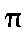
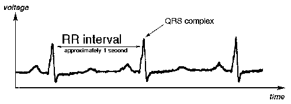
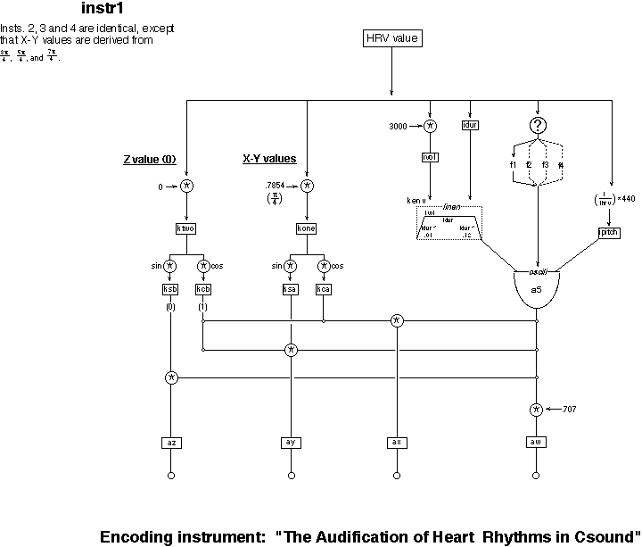

This chapter describes preliminary steps in the creation of an auditory display for heart rate variability (HRV) data. In cardiology, researchers are showing increasing interest in the ever-present fluctuations of the heart’s frequency patterns (the human internal tempo track). These fluctuations can be readily measured from an electrocardiogram and provide important insights into cardiac function [1]. For example, following a heart attack, patients whose heart rates are overly steady are prone to sudden arrhythmia, a large rhythmic jump which is often fatal. However, there have been a large number of different statistical measures proposed to evaluate heart rate variability and there is not agreement as to which are the most useful. This project is motivated by the desire to generate novel methods for displaying heart rate information that may be of potential clinical utility to physicians.
In synthesist’s terms, the heart is analogous to a simple frequency modulation system. The heart’s contractions are the result of electrochemical waves produced by the sinus node (analogous to the carrier oscillator). The sinus node is the pacemaker of the heart and produces excitation waves spontaneously at a frequency of roughly 70 cpm. The sinus frequency is modulated by the presence of chemicals secreted by the autonomic nervous system (ATN). The ATN’s components are twofold: sympathetic nerves secretes norepinephrine, which increases the heart rate, while the parasympathetic nerves secrete acetylcholine, which decreases the heart rate. The autonomic system responds to a wide variety of internal and external cues, leading to continual fluctuation in the heart rate.
Medical literature pertaining to heart rate variability analysis [1] describes the implementation of a variety of statistical techniques. Researchers have considered time-based measures (mean, standard deviation) or frequency-based measures (power spectrum in a certain frequency range). These quantities may be computed over varying time periods, from five minutes, to an hour, to a day. Identifying the start of each heart beat depends on pinpointing a transient voltage jump known as the QRS complex [see Figure 1], which is associated with the cardiac contraction. Heart rate variability is measured by the time between QRS complexes, the RR interval. A stream of RR intervals was the set of values represented in this work.
Many composers have explored applications of chaos theories to music composition and synthesis (examples can be found within this same volume). The heart’s rhythms are also not new to musical contexts [3][6]. This project, however, takes a different focus. Rather than setting out to create musically interesting sounds, our approach is to explore whether these chaotic patterns can be a source of medically useful sounds. The question pursued here is: can cardiological diagnoses be aided by information taken from an auditory display?
Auditory display is already well established in the medical field for the purpose of real-time auditory monitoring (any episode of ER, or even a visit to a real emergency room, will be replete with examples). It has been documented that the ears are better suited than the eyes for following simultaneous streams of information [2][5]. Analyses of potentially volatile environments, such as emergency rooms or airline cockpits, have shown that people respond with greater speed and accuracy when sudden changes are signaled through sound monitor cues, rather than verbally- or visually-based cues.
This project concerns itself with a newer and more complicated area of auditory display: non-real-time analysis of large data sets. The objective is not to create a direct analogy of the subject, as in the beeps of a medical monitor, but rather to come up with an abstraction represented by some appropriate auditory parameter. Since the analysis is done on already existing data, the listening time can be adjusted to whatever degree is desired, allowing large amounts of information to be displayed over relatively short listening periods. While the use of auditory displays for such analyses shows considerable promise, such displays have yet to provide a breakthrough in illumination that would result in their widespread acceptance and practice [5].
The data vector, the series of RR values, was a stream of numbers ranging from roughly 0.7 seconds to 1.3 seconds. The HRV file was truncated to 3,650 values to streamline the task of creating a working test model. Event times were reduced to 1/100th their actual value, so that an hour of data was displayed in 30 seconds. Mapping the numbers effectively was, conceptually, a case of dealing with too much freedom: in just how many ways can one treat a single stream of numbers, all with values near 1.0? The success of the implementation lies in the degree to which the incoming data can be processed. While a MIDI implementation could have attempted, it would certainly have been clumsy and imprecise (having to assign a pitch bend value to every note-on, for example, to realize specific frequencies as opposed to equal-tempered pitches). Csound, however, with its flexibility in the creation and mapping of parameters, is an optimal platform on which to create such a display.
The work was undertaken without a specific intention as far as how the final product should sound. The goal was to map the HRV values onto as many synthesis parameters as possible, creating a sound mass within which identifiable parameters were in a continual state of change. With clear delineations of parameters within the sound mass, one can begin to explore whether they change with any aurally perceptible pattern. To explore whether similar patterns might appear in micro- and macrocosmic forms, four successive halvings of the data were adjusted to play back over the same listening period from four respective quadraphonic channels. (Both quadraphonic and stereo versions of the instrument are included on the accompanying CD-ROM). The next section describes of how the HRV values were mapped to parameters of note-entry time, pitch, amplitude, timbre and localization for each note.
Csound Implementation
The .sco File
The instrument included here is the third set of auditory mappings created on an SGI Indy in McGill’s Electronic Music Studio, and is the most sonically interesting. Before examining it in detail, we describe the first two versions.
The HRV data file was first opened in a spreadsheet, modified, formatted and saved in text form into a .sco file. Initial attempts at mapping parameters were based on calculations performed within the spreadsheet. A pitch value, for example, was created by taking a value for frequency based on each HRV value. Copying the numbers into a new column and multiplying each by 440 created a p-field in the .sco file for pitch values, all based in the region of Middle A, but not constrained by any tonal scale system.
The first version treated time sequentially, producing note events at regular intervals. The patch contained four instruments. The first three were based on pitch mapping described above. Their difference was in resolution. Increasingly "smoother" versions of the same overall pitch pattern were created. Each instrument’s time/duration values represented a successive averaging of a set of 8192 HRV values which represented approximately two and a half hours of HRV activity. Instrument 1 consisted of 8192 note events, and was sounded with a glassy, sinus tone, panned center. Instrument 2 had 4096 note events, each an average of two successive events from the 8192, and was sounded with a sawtooth tone, panned right. Instrument 3 was another averaging, with 2048 events, sounded by a square wave, panned left. Instrument 4 was a two-operator frequency modulation unit. The HRV values determined the modulator:carrier ratio. The carrier frequency was based on the HRV value multiplied by 110, so that this instrument served as the "bass voice". Timbral fluctuation was achieved by having the carrier frequency modulated by the same frequency, multiplied by the HRV value. All ratios, then, were in the range of 0.7:1 to 1.3:1.
A second instrument explored the effect of using only one pitch, but sounding it at time intervals determined by the HRV values. When a pitch of 440 was produced by a sine wave, and the note durations set to overlap the next note entry somewhat, the result was varying degrees of amplitude modulation. When the sound source was a short sample of a fingersnap, there was some change in global pitch which could be perceived with sufficient attention, but the overall effect was more of noise than anything else.
By the third instrument, it was clear that the most flexible method was to limit the .sco file to four consistent columns. After adding the instrument number to create p1, the original HRV values were kept in p3. For p2, each HRV value was added successively, so that p-field 2 was cumulative and p-field 3 was incremental. The note entry times, then, were determined by the HRV values. It was a matter of multiplying each by a fractional value that produced the desired degree of time compression. All further conversions could then be made in the .orc file, by using the p-fields as factors in the variable assignment statements. To enable continuous values, a p4 was added, which was an np3 directive. Adding this p4, which enabled each note event to refer to the value of the next note event, allowed interpolation from each HRV value to the next. Attempts were made to introduce continuous pitch glissandi by using a line from the p3 to the p4 value for each i-time. Continuous vibrato or tremolo were also employed through a secondary oscili which determined the amplitude of the tone generator according to levels or frequencies determined by the HRV values. It turned out, however, that none of these continual changes were even remotely audible. As yet, any implementations of continuity are lost at the compression levels which are employed, and are thus not worth the extra computation required. The field was kept in the .sco file
Once the HRV values were reduced to 1/100th their value, different time realizations were superimposed through another instrument for which the values were scaled differently. Assigning different fractional relationships of the data to different instruments was an attempt to realize a fractal relationship among the voices. In order to realize progressive divisions of the data simultaneously over the same amount of time, four instruments were created and sent to quad outs 1 through 4. i1, was all of the values, each divided by 100; i2, which was half the values, all divided by 50; i3 was one quarter of the values, all divided by 25. i4 was one eighth the values, all divided by 12.5. (For the stereo version of this patch, i3 and i4 were omitted). A side effect of using p2, the cumulative HRV total, as the parameter for note entry times is that different divisions do not end uniformly. Due to irregularities in the rate, the data for an hour’s activity, for example, will not play back over precisely twice the time it takes to play a half hour’s worth of data, even though the number of values may be a precise 2:1 ratio.
The .orc File
The .orc file was created in two steps to enable use of the Ambisonics localization algorithms described in [7]. Ambisonics provides an alternative to Csound’s pan generator, with two significant differences. The pan generator is based on a Cartesian coordinate system, in which the location of the sound is specified by X and Y values. Ambisonics is based on a polar coordinate system, so that the location is expressed as the angle from the listener, in radians. Ambisonics also requires that the file be created in two steps, encoding and decoding. The .orc files will be presented here in pieces, to allow commentary to be interspersed. The instrument below is replicated three times, with each sent to a different quad out channel.
idur = p3
ihrv = p3*100
ipitch = (1/ihrv)*440
iamp = ampdb(ihrv)
ivol = iamp*3000
Following the standard header declaration of sample and control rates, the basic parameters are applied to multiples of p3. The variable ihrv is used when the original HRV value is needed. Pitch is derived by multiplying each value by 440, as described previously, and then taking the inverse of that value. The inverse avoids a counter-intuitive interpretation of pitch from the variability change: in other words, longer time intervals between beats represent a lowering of the heart rate. But if each value is simply multiplied by 440, higher pitch frequencies will be produced from lower heart frequencies. Taking the inverse of each HRV value per delta time creates pitch levels which increase in frequency as the heart frequency increases. The duration value, idur, is taken from p3, so that there is no overlap among the notes. The amplitude value, iamp, is taken from (p3*100), and the actual volume is taken by multiplying the iamp value by 3000.
Ambisonics’ localization principles are based on simulating the response characteristics of the Soundfield microphone, which is actually four microphones in one. There are three perpendicular figure-eight microphones forming an X, Y and Z axis, and an omnidirectional microphone which acts as a scalar to the overall signal. The four signals contain information on the horizontal and the vertical angles within a unit sphere around the listener. The two angles are specified with variables kone and ktwo.
kone = ihrv*.7854 ; ihrv*pi/4 radians
ktwo = 0
These are normally determined by pfields in the .orc file, which give the measurement in the X-Y and Z planes. The value kone represents the radian value of the intended angle in X -Y values, with the origin located to the listener’s right. The value ktwo corresponds to the radian value in the Z axis. In practice, this axis is only realized when playback takes place in an 8-channel cube. For a quadraphonic system, this step is a formality, and the value is maintained at zero. As is seen in the figure, the value of 0 neutralizes the contribution of ktwo to the patch; it is included to complete the illustration of the Ambisonics’ encoding process. For instr1, a median HRV value of 1.0 corresponds to a position located directly in speaker one, at 45 ( \F(,4) radians, or .7854). Multiplying each HRV value by the float value for this radian measurement produces notes in instr1 which all fall in the proximity of the speaker 1. Similarly, the values for instr2 are located in the proximity of Channel 2, at 135 ( \F(3,4) radians, or .2.3562); instr3 is located near Channel 3, at 225 ( \F(5,4) radians, or 3.927); instr4 is assigned to Channel 4, at 315 ( \F(7,4) radians, or 5.4978).
kenv linen ivol, idur*.01, idur,
idur*.15
if (p3 < .008) goto wave2
if ((p3 >= .008) && (p3 < .0095)) goto wave3
if ((p3 >= .0095) && (p3 < .011)) goto wave1
if (p3 >= .011) goto wave4
wave2:
a5 oscili kenv, ipitch, 2
goto contin
wave3:
a5 oscili kenv, ipitch, 3
goto contin
wave1:
a5 oscili kenv, ipitch, 1
goto contin
wave4:
a5 oscili kenv, ipitch, 4
goto contin
Following the declaration of a volume envelope, kenv, is a series of four conditional statements. Depending on four ranges for the HRV values, chosen arbitrarily for this model, the sound is produced by one of four definitions of a5, which differ only by lookup function table in the .sco file. This division of the data into four timbral elements is meant to emphasize any tendencies toward a certain value range.
The last lines of each instrument complete the Ambisonics algorithm by taking values from the sine and cosine of the kone parameter, producing four encoded channels and sending them to the four quadraphonic outputs. ax, ay and az are based on the location information recorded by each of the three figure-eight microphones. aw simulates the signal from the omni-directional microphone, which distributes a uniform, "base" signal over the four channels.
contin:
kca = cos(kone)
ksa = sin(kone)
kcb = cos(ktwo) ;for quad, cos(0)=1
ksb = sin(ktwo) ;for quad, sin(0)=0
ax = a5*kca*kcb
ay = a5*ksa*kcb
az = a5*ksb
aw = a5*.707
outq ax,ay,az,aw
endin
The resulting soundfile is imported via a soundin generator to the decoding .orc file, where each channel is put through a decoding equation which distributes the signal over the four channels. These equations are based on phase relationships which are the basis of M-S stereophony, described in [4] and numerous other sources.
instr 1
ay,ax,az,aw soundin "[name of file]"
a1 = aw + (ax*.707) + (ay*.707)
a2 = aw + (ax*.707) - (ay*.707)
a3 = aw - (ax*.707) - (ay*.707)
a4 = aw - (ax*.707) + (ay*.707)
outq a1,a2,a3,a4
endin
The first two channels for the soundin generator were switched because Csound treats quad channels differently than the circular pattern employed by the Ambisonics equations. In Csound, the odd channels, 1 and 3, are to the left front and rear, and the even channels are to the right. Switching ax and ay was just one way to compensate for this difference. It would have been just as easy to switch channels 1 and 2 the output stage of the encoding instrument, or to switch the two audio outputs.
Conclusions and Projections
The sound file produced by this instrument has a high density, due to the 6,300-or-so note events over the thirty seconds of its duration. The type of auditory overview created depends on the time compression employed. The intention of the conditional step in the encoding .orc file, as described above, is to give any significant indications of shifts among predefined, quantized steps. Refining these levels of definition is the next step, with the aim of creating effective auditory correlates to the elements which factor into a patient’s risk stratification, the overall assessment of the patient’s condition.
The reduced version of the .sco file for the third implementation can be created by a C function. The first two implementations were hampered by limited numbers of values which could be loaded into a spreadsheet and by long computation times. The beauty of Csound (in this case) is that it can just as easily perform all these computations with statements in the .orc file. As for the .sco file, it will be a simple matter to write a function which generates it automatically by reading each HRV value from the source file?or every nth value, or the average of every n values?dividing it by a user-specified amount, and then sending the new value and a cumulative total out to a .sco file.
Given the many different statistical measures applied to HRV data, auditory display may become an effective method for examining new superpositions of different statistical treatments. Localization may be a key to such comparisons. Spatial imaging is a somewhat slippery factor in the perception of multiple events, as reported in [2]. Spatial separation alone is not sufficient for the auditory system to perceive two events. Audio technology relies on this fact in its use of phantom imaging: a signal produced identically from two speakers will be localized directly between them. Panning effects are produced by adjusting the relative volumes of the speakers, causing the image to "drift" towards the speaker which produces the louder signal. The effect demonstrates a heuristic of the auditory system to fuse events from different locations?all other parameters being equal. The slightest difference in the signals, however, will cause them to segregate and be perceived as two independent streams. Small frequency differences, for example, which are imperceptible when two tones are panned center, become noticeable when the tones are panned to opposite channels. The phantom imaging falls apart, and the auditory image becomes that of two distinct streams, emitted from the respective speakers.
Discussion of stereophonic imaging, however, has a tendency to focus on localizability as the measure of its effectiveness. The better the listeners are able to localize sound events, the better the stereophonic system is said to be. Its place in auditory display consideration is somewhat tenuous as a result, as reported in [5]. Asking people to make judgments based on the location of a cue, which might differ by a few degrees from its last occurrence, is not likely to yield promising results. The eyes are superior to the ears in identifying precise changes in space. The place for localization in the auditory analysis of data, then, might seem curious: certainly, it is unlikely that a physician could determine anything based on pinpointing a blip in the quadraphonic field. Little has been written, however, on the auditory streaming effects inherent in stereophonic separation, and their qualitative changes in perception. Incorporating a spatial set of parameters can affect the cohesion and segregation of sound events. The quadraphonic implementation of this patch raises the question of whether similar timbral sources assigned to different speakers can be distinguished. Spatialization applied to a more sophisticated statistical treatment may yield significant commonalities or differences which may not be as readily apparent in a visual representation.
Ultimately, clinical implementation will be dependent on the amount of listener education which is necessary to understanding the auditory data. Since cardiologists have well-developed ears?accustomed as they are to detecting nuances in the heart through the stethoscope?the slope of the learning curve would depend on a balancing of two considerations, described in [1]. On the one hand, there is the auditory display concept of the "beacon", which refers to a distinct sonic event designed to happen when some known condition is reached. (For a simplified example, if the heart rate were to go below a certain value, a bell could ring.) With a focus on creating beacons for significant HRV events, it becomes the burden of the synthesist to create a display which makes the significance clear, rather than the burden of the cardiologist to learn to hear it. On the other hand, by emphasizing known conditions, one would not want to impose constraints on the display which might obscure features that are not expected. A successful system will have to make known factors explicit, while remaining general enough to allow unexpected factors to be perceived.
Auditory display is a rewarding
study due its inter-disciplinary nature. The sound synthesist
must become familiar with the terminology and problems of a research
field, in this case cardiology, in order to create an effective
auditory display for it. Much work remains to be done before any
clinical implementation of the work described here is feasible,
but it is clear at this point that Csound can easily be tailored
to function as an auditory spreadsheet, and as such it is a natural
choice for research applications.
Figures

[1] The heart’s voltage patterns, measured through an electrocardiogram. Normally, the QRS complex corresponds to the heart’s contraction.

[2] Block diagram of the .orc encoding file
Acknowledgment:
Partial funding for this project was provided from the Natural Sciences Engineering and Research Council.
References:
[1] "Heart Rate Variability: Standards of Measurement, Physiological Interpretation, and Clinical Use." Special Report of the Task Force of the European Society of Cardiology and the North American Society of Pacing and Electrophysiology. Circulation. 1996;93:1043-1065.
[2] Bregman, Albert S. Auditory Scene Analysis: The Perceptual Organization of Sound. Cambridge, MA: MIT Press, 1990.
[3] Davids, Zach. Heartsongs: Musical Mappings of the Heartbeat. Wellesley, MA: Ivory Moon Recordings. 1995. Liner notes: Ary L. Goldberger, Zach Goldberger, Chung-Kang Peng, Paul Trunfio.
[4] Dickreiter, Michael. Tonmeister Technology. New York: Temmer Enterprises, Inc., 1989.
[5] Kramer, Gregory, ed. Auditory Display: Sonification, Audification and Auditory Interfaces. Proceedings Volume XVIII, Sante Fe Institute: Studies in the Sciences of Complexity. Reading, MA: Addison-Wesley Publishing Company, The Advanced Book Program, 1994.
[6] Lombreglia, Ralph. "Every Good Boy Deserves Favor." The Atlantic Monthly, December 1993.
[7] Malham, D.B. and A. Myatt. "3-D Sound Spatialization using Ambisonic Techniques." Computer Music Journal 19(4), Spring 1995: 58-70.